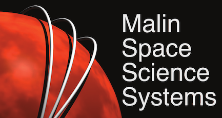

RF Generator for Quadrupole Ion Guide
A kilovolt RF generator for a mass spectrometer. I custom-wound a toroid transformer with 474% more gain at 1 MHz than a U-core, and now own the high voltage resonator board.
Spring 2026 to Present
Drone Docking Station/Structural PDB
Landing guidance that lives in the dock, not the drone: an IR beacon board and a structural power board for a sub-250 g airframe.
Summer 2026

Precision Focus Actuator
Closed-loop control for a space camera focus actuator: 12.96 mil of travel at about 4.9 nm per step, with every 1 mil test move within ±0.2 mil.
Fall 2025
ESB Modular Gripper
A prosthetic gripper concept that adapts its grip force to hold anything from an egg to a heavy object.
Fall 2025